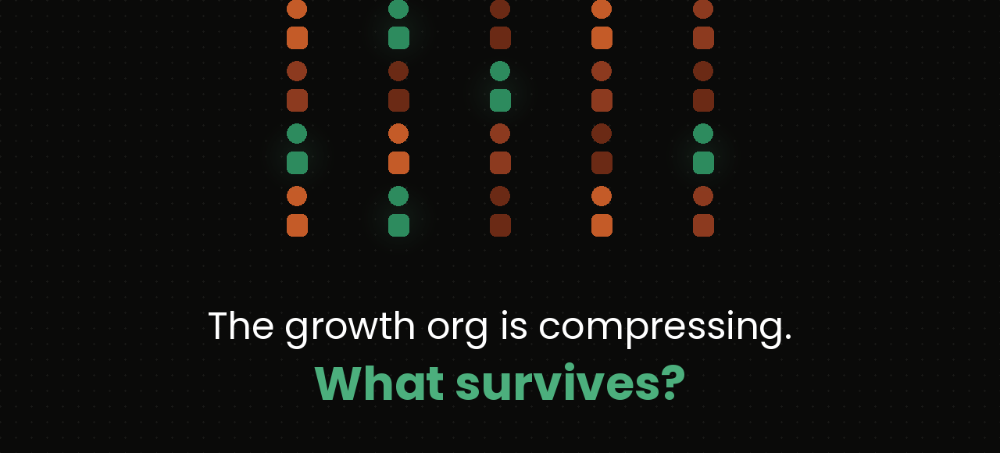

The Two-Person Growth Org

The Question Everyone Is Asking
Every growth leader I talk to is asking the same question: What does my team look like now?
Not in five years. Not when AI agents are running campaigns autonomously. Right now — when the platforms have automated most of the execution layer but the org chart still reflects a world where humans did that work manually.
The honest answer is uncomfortable. Most growth organizations are staffed for a complexity that no longer exists. The roles are real. The people in them are capable. But the work those roles were built around is migrating to machines, and the organizational structure hasn't caught up.
I've started using an analogy that seems to land: the managing director and the architect.
A growth organization — whether it's an in-house team at a Series B company or a performance marketing function inside a public enterprise — needs exactly two kinds of leadership. Everything else is either execution that AI is absorbing, specialist work that belongs with managed partners, or coordination that the compression of layers makes unnecessary. Where brand sits relative to this structure is a question worth its own section — and we'll get there.
The Architect
The architect designs the decisions.
Not the campaigns, not the creative, not the media plan — the decision framework that determines what gets built, what gets killed, and what gets scaled. This is the person who looks at a portfolio of growth bets across acquisition, retention, product growth, monetization, and pricing — and decides which ones represent real signal versus noise. They design the methodology. They own the strategic analytics. They make the calls that no dashboard can make for them.
When your CAC spikes 22% in a quarter, the architect is the person who can tell you whether that's a channel maturation problem, a creative fatigue issue, a product-market fit erosion, or a deliberate competitor strategy to price you out of a segment. The data shows you what happened. The architect tells you why — and what to do about it.
This role requires deep pattern recognition built over years of seeing what works and what doesn't across contexts. It requires the ability to synthesize across product, finance, brand, and market dynamics simultaneously. And it requires the intellectual honesty to kill a bet that's underperforming even when a senior stakeholder championed it.
AI accelerates this person. It gives them faster access to data, broader pattern matching, and the ability to pressure-test hypotheses in hours instead of weeks. But it cannot replace the judgment. The architect is designing the blueprints. AI can render them faster, but it cannot decide what to build.
The title on the org chart: VP Growth Strategy.
The Managing Director
The managing director governs the ways and means.
If the architect decides what to build, the MD decides how it gets built and who builds it. This is the operational leader — the person who manages people, vendors, agencies, budgets, timelines, and the daily reality of turning strategic bets into executed work.
The MD owns every relationship that makes execution happen. The internal team reports to them. The agencies and specialist vendors — SEO, paid media, creative production, localization, influencer partnerships, CRO, PR — are governed by them. The budget allocation that turns a strategic thesis into funded work flows through them. And the politics — the cross-functional relationships, the executive alignment, the stakeholder communication that keeps the machine running without friction burning everything down — that's their domain.
This is not a project management role. This is a leadership role that requires judgment about people, about organizational dynamics, and about the operational realities that determine whether a brilliant strategy actually gets executed or dies in a Slack channel.
AI assists this person — better reporting, faster status visibility, automated coordination — but the core of the role is relational and political. You cannot automate the conversation where an MD tells a CMO that their preferred agency is underperforming and needs to be replaced. You cannot automate the judgment call about whether a team member is struggling because of skill gaps or because the role has shifted underneath them. You cannot automate trust.
The title on the org chart: VP Growth Operations.
What Sat Between Them — And What's Compressing
In the traditional growth org, between leadership and outcomes sat a layer of 15 to 20 people doing work that fell into roughly four categories:
Platform execution. Campaign builds, bid management, audience targeting, creative trafficking, A/B test setup, pixel implementation, feed management. This is the layer Meta, Google, and TikTok are automating most aggressively. Meta's Advantage+ suite, Google's Performance Max, TikTok's Smart+ — these aren't tools that help humans do platform work faster. They're systems designed to eliminate the need for humans to do it at all.
Reporting and analysis. Pulling data, building dashboards, creating weekly reports, slicing performance by segment. This work was never the analysis — it was the assembly of materials that someone else would analyze. AI handles the assembly. The interpretation — the part that actually matters — was always the architect's job. Strategic analytics belongs embedded in the strategy function, not siloed in a team that produces dashboards.
Creative production. Designing ad variations, writing copy iterations, producing landing pages, building email templates. The volume work here is collapsing. AI generates variations at a fraction of the cost and time. What remains valuable is creative direction — the strategic judgment about what the brand should say and why — not the production of individual assets.
Coordination. Status meetings, project management, cross-functional alignment, timeline tracking, vendor management. Some of this compresses through better tools and shorter communication chains. Some of it rolls up into the MD's function. The dedicated coordinator role — the person whose entire job was making sure the pieces connected — becomes harder to justify when the pieces are fewer and the tools to connect them are better.
I want to be precise about something: AI agents are not running growth operations today. The breathless narrative about autonomous AI managing campaigns end-to-end is ahead of reality. What's actually happening is more mundane and more consequential — the platforms themselves are absorbing the execution layer, and the remaining human work is consolidating upward into fewer, higher-judgment roles.
The Org Chart
The model has four layers. The internal team — five people who own judgment. The managed partners — agencies and specialist vendors who handle execution requiring human expertise. The automated layer — platforms and AI handling repeatable tasks. And the boundary — the structural line where growth's authority ends.
Three Layers, Not One
The traditional growth org collapsed everything into headcount. If you needed SEO, you hired an SEO person. If you needed localization, you hired a localization manager. If you needed creative at scale, you hired designers and copywriters. Every function was an FTE.
The new model runs on three layers. The internal team — five people whose primary output is judgment. The managed partner network — agencies and specialist vendors who execute against strategic briefs set by the architect, governed operationally by the MD. And the automated layer — platforms and AI handling the repeatable work that used to require human hands.
This is what makes five people viable. You're not asking five people to do the work of twenty. You're recognizing that the work splits into judgment (internal), specialist execution (partners), and repeatable tasks (automated) — and staffing each layer appropriately.
The managed partner layer is the part most people miss. SEO and AEO require deep, evolving expertise that doesn't justify a full-time hire in most growth orgs. Localization requires linguistic and cultural knowledge that a generalist team can't replicate. CRO specialists bring testing methodologies and benchmarks from across industries. Paid media agencies — even in a world of Advantage+ and Performance Max — still add value through creative strategy, platform beta access, and spend-level insights that a single in-house channel strategist can't match.
The MD manages all of these relationships. The architect sets the briefs they work against. The strategic direction flows from the top of the org. The execution flows through partners who bring specialist depth without permanent cost.
Where Data Lives
Data is the question that trips up every growth org redesign. In the traditional model, analytics was a service function — a team that built dashboards and pulled reports when someone asked. In the new model, that service function doesn't exist. Report assembly is automated. The dashboards build themselves.
What remains is strategic analytics — the interpretation of data, the design of experiments, the synthesis of signals into decisions. That work belongs embedded in the architect's domain, not siloed in a team the architect has to request reports from. The architect doesn't need someone to tell them what the data says. They need the data to be structurally available so they can determine what it means.
The Growth PM carries analytical weight for product experimentation. The architect carries it for everything else. If the org scales to the point where a dedicated strategic analyst is warranted, that role reports into the strategy function — not into a standalone analytics team.
The Boundary
Here is the honest part of this model: it has a structural limit.
The two-VP model governs what growth can own — acquisition, retention, monetization, creative, data. But the moment you get into product growth, you're dependent on resources that don't report to you. Engineers report to the CTO. Product managers report to the CPO. Data infrastructure reports to a Head of Data. The growth org can set strategy for product growth, activation, and experimentation — but it cannot command the resources to build what that strategy requires.
AI compresses the execution layer but doesn't solve this coordination problem. If anything, it makes it worse — because the architect is now designing higher-leverage bets faster, which means they're more dependent on engineering and product to build the systems those bets require. The bottleneck shifts from "can we think fast enough" to "can we get the resources allocated."
This is not a flaw in the model. It's a boundary worth naming. The org chart governs what growth controls. The interface with engineering, product, and data infrastructure — the prioritization, the shared roadmaps, the resource negotiation — is a different organizational design problem. One that requires someone sitting above both functions with the authority and judgment to allocate resources across them.
The Brand Question
The model above is deliberately ambiguous at the top. There's a reason for that.
The two VPs own growth — acquisition, retention, monetization, product growth, data. But none of that exists in a vacuum. Every growth decision touches brand. The Architect's strategic bets are shaped by positioning. The MD's creative direction has to be consistent with brand identity. The managed partners — especially creative production, PR, influencer — are executing work that carries the brand into market.
So the question becomes: who owns brand, and where does it sit relative to this structure?
The reflexive answer is "the CMO." And in some organizations, that's correct. But it's worth being honest about why that answer is often wrong.
Most CMOs built their careers in the translation and presentation layer — brand narrative, communications, positioning as a creative exercise. The growth org described in this essay is a decision governance function. It allocates capital, designs experiments, interprets performance data, and makes bets that directly affect revenue. Putting a brand narrator in charge of a capital allocation function is a reporting structure that sets both parties up to fail. The CMO doesn't have the analytical framework to govern the Architect's decisions. The Architect doesn't have the organizational patience to educate a CMO on why their intuitions about the data are wrong.
This isn't a criticism of CMOs as a class. It's a structural observation: the skills that make someone excellent at brand strategy are not the skills required to govern a growth function, and the reporting line should reflect that.
There are three honest configurations.
Growth reports to the CEO or COO. Brand exists as a peer function — VP Brand Marketing alongside VP Growth Strategy and VP Growth Operations, all reporting to the same executive. Growth owns performance. Brand owns positioning and awareness. The tension — creative direction, messaging, how aggressively you optimize for conversion versus protect brand equity — is arbitrated by the CEO, not by one function overriding the other. The Creative Director becomes the bridge role. This works when the CEO has enough judgment about both functions to hold the tension productively.
Growth and brand report to a CMO — but only a specific kind of CMO. A CMO who came up through growth, analytics, or P&L ownership — who understands capital allocation and can evaluate the Architect's decision frameworks — can govern both functions. This person exists. They're just not the majority of people currently holding the CMO title. If your CMO can read a cohort analysis and challenge the Architect's interpretation of a retention curve, the reporting line works. If they can't, you're adding a governance layer that subtracts judgment.
Brand is embedded in the growth strategy. At companies where growth is the business — marketplaces, SaaS, fintech — brand isn't a separate function. It's a dimension of the Architect's decision framework. Positioning is a strategic bet. Brand voice is a creative brief. The MD governs brand execution through the same partner network that handles everything else. This works at Series B through early growth. It tends to break at scale, because the person optimizing for next quarter's CAC is structurally not the same person who should be protecting the brand's ten-year positioning.
The org chart above shows CEO/CMO at the top deliberately. The structure below that node doesn't change regardless of which configuration you choose. What changes is who arbitrates the tension — and whether that person has the analytical judgment to do it without slowing down the function or letting growth erode brand equity unchecked.
The Uncomfortable Implications
For the people in the compressing layer. This is not a reflection of your capability. The execution work you did was real, it was skilled, and it mattered. The problem is that it was learnable, repeatable, and therefore automatable. The career question is whether the years you spent in execution built judgment — the pattern recognition, the contextual awareness, the ability to make calls the data can't make for you — or whether they built proficiency at tasks the platforms are absorbing. If it's the former, you're moving up. If it's the latter, the honest conversation is overdue.
For executives evaluating their orgs. The temptation is to keep the layer and add AI on top — same team, new tools, hope for productivity gains. This is the path of least resistance and the path of greatest waste. AI doesn't make a 15-person growth team 30% more productive. It makes a 5-person growth team with the right partner network 300% more capable. The leverage is in compression, not augmentation of a structure that was built for a different era.
For the architect and MD themselves. The two-VP model only works if these roles are filled by people with genuine judgment. The old org chart could absorb mediocre leadership because the layer below compensated — someone always knew the answer even if the VP didn't. The new model is unforgiving. If the architect can't actually design the decisions, there's no team below them to quietly correct the strategy. If the MD can't actually govern a network of partners and stakeholders, there's no coordinator layer to catch the balls they drop.
For the apprenticeship pipeline. This is the hardest implication and the one most people aren't talking about. The execution layer wasn't just a cost center — it was where the next generation of architects and MDs learned their craft. The junior media buyer who spent two years in Facebook Ads Manager was building the pattern recognition that would eventually make them a strategist. If you compress that layer, you compress the training ground. The two-VP org is more efficient today, but it raises a real question about where tomorrow's senior talent develops.
What This Is Not
This is not an argument for firing your team on Monday. It's not a prediction that AI agents will be running growth by Q3. And it's not a claim that every growth function compresses to five people at every company stage.
Early-stage companies might need the architect and the MD to be the same person — a single growth leader with both the strategic judgment and the operational command. Large enterprises with complex, multi-brand, multi-geo growth functions will always need more humans in the system.
The argument is structural: the layers of the growth org that existed to handle execution complexity are compressing, and the leadership functions that remain — designing decisions and governing operations — are distinct enough to deserve distinct roles, distinct talent profiles, and distinct evaluation criteria.
The architect is not a better version of the MD. The MD is not a junior version of the architect. They are different cognitive profiles applied to different problems. Conflating them — which the old "VP of Growth" title did by default — is how organizations end up with brilliant strategists who can't manage people or excellent operators who can't see around corners.
The Question That Matters
If you run a growth org, here's the question worth sitting with: For each person on your team, is their primary output judgment or execution?
Judgment — the calls that require pattern recognition, contextual awareness, and the courage to be wrong — is getting more valuable. Execution — the implementation of known playbooks on established platforms — is getting automated.
The people producing judgment need to be identified, retained, and compensated at a level that reflects the fact that they're now carrying the intellectual weight of what used to be a 15-person function. The people producing execution need honest conversations about whether their skills are migrating toward judgment or whether the role as they know it has a declining half-life.
Neither conversation is easy. Both are necessary. And both become more expensive the longer you wait.